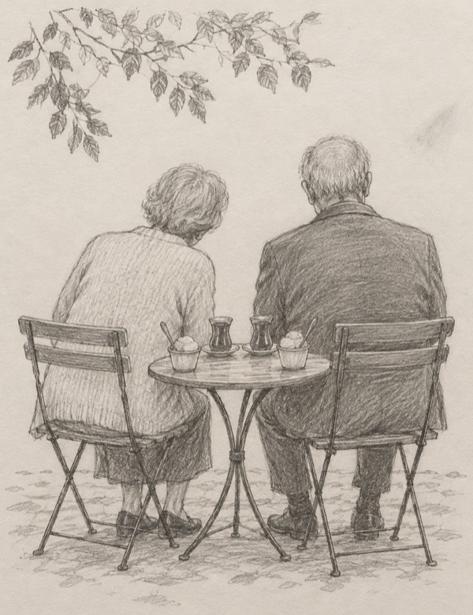

|
In early October, a wedding at a retirement home in Istanbul made the news.
The groom is 73. The bride is 70.
It started with a friend request.

Haluk had lived at the home for ten years. Then Fatma moved in.
He noticed her. For a while, he just admired her from afar.
Then he sent her a friend request.
She didn’t say yes right away. She didn’t know him well. So she told him this:
“You have followed me for a while, let me watch you a little too.”
When I read that, I thought one of two things.
Either Fatma would make a very good detective.
Or she knew something most of us forget the minute a man is sweet to us. You’re allowed to look, too.
I’m going with the second.
Because she did look. Then she said yes to the friend request. Their first date was tea. And ice cream.
“I was excited,” she said. “It was something I was not used to, but after meeting him I decided not to resist.”
Haluk had already made up his mind. He phoned her and said he wanted to marry her.
She asked for time.
He waited. And when the time was up, she said yes.
After a two-month engagement, they married right there at the home. Fatma made her own wedding dress. Her daughter did her hair.
Haluk, marrying for the first time at 73, gave his review of the bride: “If she wore a sack, the sack would suit her.”
Here’s what their story proved to me. Real love doesn’t mind waiting while you look.
Most of us skip the looking. Someone’s lovely to us for a week, and we’ve already decided.
So take a good look. Ask yourself three things about him.
Does he notice the little things that matter to you? When Haluk told their story, he even remembered the ice cream.
Have you had a good look at him, too? Fatma did. “Let me watch you a little too.”
When you ask for time, does he give it? She asked. He waited. Then she said yes.
If any of those made you stop and think, that’s where I’d start with you.
And if there’s no one right now? Keep the three questions anyway. They work just as well on the next man.
Here’s what happens when you click.
You type a few lines. Who he is, and which question stopped you. Or that there’s nobody yet.
I read every word, and I write back.
Then we take a good, long look together. No rushing.
Evelyn, let’s take a good look at my love life →
If you’ve ever said yes too fast, you’re in good company.
When someone’s sweet to us after a long, lonely stretch, of course we rush. Who’d want to slow down a good thing?
Nobody should feel silly for that. It happens to the kindest people.
And if you’re the one who asked for time, and then felt bad about it? That was never rude.
New here? Your first 3 minutes are on me.
Fatma took her time. But she didn’t take forever. When the time was up, she gave her answer. Looking doesn’t have to wait.
Take a look with Evelyn →
— Evelyn
P.S. “Let me watch you a little too.” She was 70, and she still made him wait. If someone’s been paying you attention (or not nearly enough), tell me about him. If there’s nobody yet, I’d still love to hear from you. Start here.
|